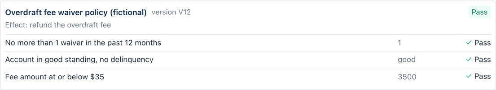
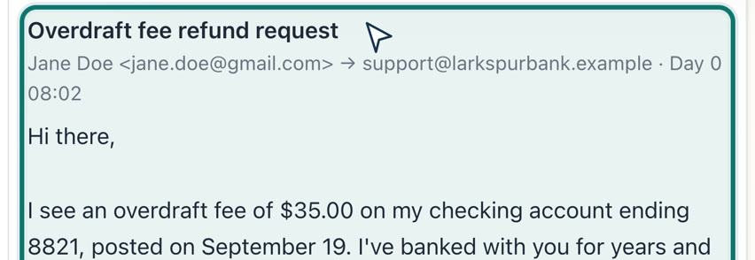
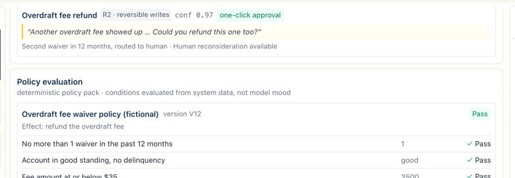
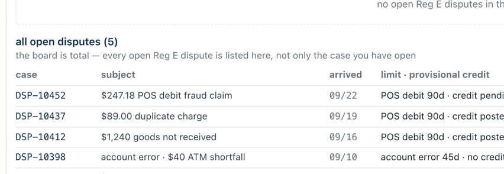
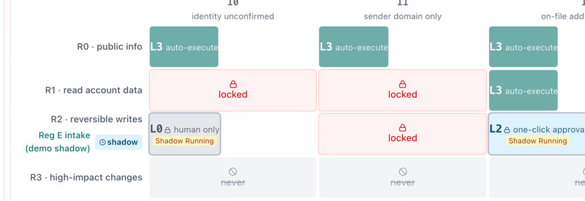

Email Autopilot for Bank Services
- Turn every inbound email into a verified, compliant, fully resolved case.
Wu Kun, wukun2005@gmail.com, October 2026
01 What it does
One thread, three desks, no hand-off.
Ninety-nine seconds: three emails — dispute, refund, fraud — and the admin console that sets their limits.
- A dispute, a fee refund and an attempted fraud — then the admin console.
- Whatever the bank's rules don't allow stops for a person.
- Three demos later each prove one claim: identity, dispute, fraud.
01 Where we start
The beachhead is the middle.
Of 8,445 insured US institutions, 262 banks sit in the band we can actually serve — big enough to run Reg E, small enough to buy rather than build.
02 Why they care
The clock starts at the inbox.
An email is a written error notice under Reg E. The clock starts when the bank receives it — not when an agent opens it.
02 Why they care
The slowest, priciest channel they run.
Email is the channel AI has barely touched — and the one where an agent's hour leaks the most.
02 What it is worth
One bank's email book is a $4.8M cost base.
600,000 emails a year at $8 each. What we take out depends on how much we can genuinely finish.
Net-new, not cannibalised. Async mail is the safest autonomy proving ground and 90 days of history is a ready-made eval set; on assumption-based math ≈$268k of resolution fees outweighs the ≈$63k of seats they replace.
Three levers move together across the three cases — failed demand, autonomy, copilot uplift. Full arithmetic in B1, and every input is recalculated from the customer's own mail in week one.
02 Why now
Four groups want this customer. Nobody has the email case.
Window: 12–18 months. We spend it on what Talkdesk already ships — CXA Operations Center, Agent Builder, Automation Flows, and core-banking connectors since April 2025. Freshworks has shipped autonomous email since 2025-06; nobody has shipped the case.
Why this over our other opportunities: voice is the existing base, so email is an add-on to the same install base rather than new-customer acquisition; async mail carries no real-time interruption risk, so it is the lowest-risk way to graduate the autonomy matrix; and it reuses the same runtime, so the marginal build is the vertical layer alone.
03 Why us
Same email. A different thing is being governed.
“They govern what the AI says, topic by topic. We govern what it says, does, and to whom — inside every email.” IDC, 2026: Talkdesk “suits buyers looking for vertical-specific AI workflows rather than generic, horizontal automation.”
03 How it works
The thread is the case.
Nine steps, and only one of them is creative. The model decides which road; the flow walks it.
03 How it works
The reply, assembled from three sources.


The letter is not written. It is assembled — the disclosure and the amounts are filled from the system, and the only thing a model touches is the sentence that joins them. That sentence is boxed in by the two facts on either side of it: it can connect them, never add one.
03 Scope
We automate the work, not the decision.
One line, drawn on purpose: everything reversible goes to the machine, everything consequential stays with a person.
Wave 2, once wave 1 has graduated: payments and payoff, complaints and vulnerability signals.
03 AI and humans
Autonomy is earned, intent by intent.
Three axes decide what the machine may do on any single case — and nothing starts autonomous.
03 Prototype github.com/wukun2005-gif/mailAutopilotForFS
Four screens, one case — nobody starts cold.




03 Prototype github.com/wukun2005-gif/mailAutopilotForFS
Three emails, three proofs.
03 Prototype github.com/wukun2005-gif/mailAutopilotForFS
Admin: the bank writes the limits, not the model.
- Every cell of the matrix, the thresholds behind them, and the wording of the locked templates.
- R3 and R4 cells do not respond at all. A cell can be tightened in one click, never loosened.
- A readiness report before every delegation: backtest results, sample counts, error rates.
04 How it fits
A thin vertical layer. Not a new platform.
05 How we would know
Three numbers. One pilot.
06 Risk
Top risks would end this product.
- High-recall detection at ingest, before an agent opens the mail
- False positives preferred — recall ≥99.5% gates all autonomy
- No samples in 90 days means no L3
- Injected text is quarantined as data, never as instruction
- R3 combinations have no callable function on this channel
- Confirmation goes only to on-file contacts
- Amounts, dates and deadlines come only from system slots — the model never writes a number
- R4 is pinned to L0; credentials sit at the tool layer
- The matrix beats the model
Also on the register: tipping-off vs duty to speak (31 CFR 1020.320(e)) · over-disclosure to an unverified sender (GLBA) · third-party risk review · vulnerable-customer fairness · the judge itself failing (14% verdict flip rate). Full list in Backup B10.
07 What I would do first
Two partners. Forty-five days.
Thank you.
Questions — and the assumptions you would replace first.
Backup · B1 The ROI, line by line
Where $2.68M comes from.
| Line | Calculation | Value |
|---|---|---|
| Failed demand falls | 510,000 emails net of 15% fewer repeat contacts | ≈ $720k |
| Resolved autonomously | 510,000 × 35% × $8 | ≈ $1.43M |
| Copilot uplift on the rest | 331,500 × $8 × 30% faster | ≈ $800k |
| Less per-resolution cost | 178,500 × ≈ $1.50 | − $268k |
| Net | About 56% of a $4.8M cost base | ≈ $2.68M · ≈ 32 FTE |
Two denominators, both reported. 35% is measured against email net of failed demand; against all valid inbound it is ≈30%. Reporting only the flattering one is how these numbers get destroyed in the room.
Backup · B2 Reg E · Reg Z · retention
The clocks the product is measured against.
| Reg E node · 12 CFR 1005.11 | Deadline | Note |
|---|---|---|
| Notice of error received | at receipt | Oral or written — an email counts; clock starts on server arrival time |
| Investigate | 10 business days | Otherwise post provisional credit within 10 BD |
| Provisional credit | 10 business days | New accounts: 20 business days |
| Maximum investigation | 45 days | New account 90 days; POS debit and foreign transfer 90 days — 1005.11(c)(3)(ii) |
| Notify of provisional credit | 2 business days | Correct the error within 1 business day |
| Notify outcome | 3 business days | No error → written explanation under 1005.11(d) |
| Clock while awaiting materials | never pauses | Interpretation 11(b)(1)-2 — no pause entry exists in the product |
| Other obligation | Deadline | Note |
|---|---|---|
| Reg Z 1026.13 written claim | ack in 30 days | Claim within 60 days of statement; resolve within 2 cycles, max 90 days |
| Email retention | Longest applicable | The bank's own correspondence-retention schedule plus legal hold. Broker-dealer channels would add FINRA 17a-4 / 4513 — out of scope for v1. |
| Record keeping | 5-year default | Reg E 1005.13 and Reg Z 1026.25 ≥2 yrs; BSA 1010.430(d) and SAR 1020.320(d) 5 yrs — WORM dossier |
| SAR secrecy | no tipping-off | 31 CFR 1020.320(e) conflicts with the Reg E and Reg Z notice duty — routing decided by legal and BSA, never by the AI |
Terminology guard: Reg E has no explicit acknowledgement duty — the 30-day acknowledgement is a Reg Z requirement. Enforcement anchor: 2019-BCFP-0001 (USAA Federal Savings Bank) cited the bank for “requoting customers to contact the merchant first”, which the CFPB Reg E FAQ (Q4, Q9) prohibits — the product must never require a signed statement or police report before accepting a dispute.
Backup · B3 The runtime we are borrowing
The hard part is not the model.
| What a dispute actually needs | Who provides it |
|---|---|
| A case that survives 10 to 90 days across five systems | Durable case state in Automation Flows — not a model's attention span |
| Waiting, without burning a thread | Native timer waits in the flow; the AI wakes at checkpoints |
| Writes that never double-fire | Idempotency keys and compensation (saga) on every money action |
| A human who can take over and hand back | Handoff that wakes the case rather than parking it |
| Failure that degrades rather than stops | Fail-closed to a human; the case is never allowed to die in a queue |
If a case is ever lost it will be lost in the flow, not in the reasoning — which is why mid-flow halt rate is a first-line engineering metric, targeted below 0.5%.
Backup · B4 Questions I expect
Six questions, short answers.
Backup · B5 Guardrails · stage targets
Eight guardrails. Five checkpoints. Three numbers.
| Guardrail (monthly) | Threshold and action |
|---|---|
| Regret rate by intent | Two consecutive weeks > baseline +2pp → auto-downgrade to L2 (assumption) |
| Two-sided monitoring | Watch “should have delegated but did not” as well as “delegated but should not have” |
| Handoff rate and reasons | System-failure share >10% → engineering alert |
| Customer-side signals | CSAT not below the human baseline; rising repeat contact freezes graduation |
| Clock health | Inside the 48-hour warning zone → pinned atop the supervisor console |
| Drift detection | PSI shift or new intent clusters → auto-downgrade plus a labelling queue |
| Detection latency | Regulated-intent P99 ≤ 15 min (assumption) → alert on breach |
| “Please call us” rate | Baseline 22% (assumption), must fall month over month |
| Checkpoint | VARR | TTR | Trust |
|---|---|---|---|
| Pilot week 4 · shadow ends | not published; routing accuracy only | unchanged | recall ≥99.5% to enter; zero misses to exit |
| Pilot week 6 · L1 / L2 | 10–20% band (assumption) | observed only | zero critical errors · 100% file completeness |
| End of pilot · day 45 | first formal measurement, no preset value | baseline established | 100% clocks · ≥2 intents reach L3 |
| 6 months post-GA | 25–35% (assumption) | <1 business day; autonomous <15 min | sustained zero critical errors |
| 6–9 months post-GA | 20 / 35 / 50% tiers | <15 min as the norm | regret rate below the human QA error rate |
The one I would not trade: any promise the AI makes becomes a clock when the letter is sent, cleared only when the fulfilment letter goes out. And never claim we redefined the metric — Zendesk has billed on Verified Resolution since 2026-05; we say regulator-grade verified.
Backup · B6 Trade-offs
Reversible earns it. Irreversible never does.
Also given up, on purpose: assembled letters over fluent ones, in-app step-up over a link, a runtime of our own, and mega-bank deals — they build, and Sierra owns that story.
Backup · B7 Competitor detail · verified 2026-09
Everyone has an agent. Nobody has the email case.
| Vendor | Group | What it has | What is missing | Price (public) |
|---|---|---|---|---|
| Talkdesk Autopilot | CCaaS | Email GA 2026-02-23, Automation Flows, FS connectors since 2025-04, 16 banking agents | No dispute-intake agent in the catalogue; email anti-injection not published | $85–225 / seat |
| NICE · Genesys · Five9 | CCaaS | Channel-agnostic agents; NICE AI Control Plane 2026-09; Genesys ARR $2.9B, +30% | Email never promoted; no packaged FS; Five9 is voice-first | ~$110 / seat (Genesys, 3rd-party) |
| Salesforce + Fin | CRM | Two-Way Email, Help Agent pay-per-resolution; Salesforce closed its $3.6B acquisition of Fin, 2026-09-10; 67% average | No real-time contact-centre ops, no prebuilt core-banking connectors; cases are e-commerce shaped | $0.99 / outcome |
| Zendesk AI | CRM | An independent model verifies every billed resolution, from 2026-05-18 | All-channel mix, email never broken out; FS cases are all fintech and chat scope | $1.50–2.00 / res |
| Freshworks · Microsoft | Helpdesk | Freshworks first to headline autonomous email, 2025-06 | SMB, no FS depth, no voice; D365 does not promote autonomous send | — |
| Sierra | AI startup | $15.8B valuation, ~$200M ARR, BBVA agent live 2026-08-04 | No public Reg E clock engine, dispute state machine or audit dossier | est. $50–200K + $1–2.50 / res |
| Decagon | AI startup | $4.5B valuation; Chime at 70% resolution, chat and voice | Core banking only via custom integration, no prebuilt connectors | not public |
| Lorikeet · Aide | AI startup | Reg E / UDAAP / FCA packs; “compliance team as a first-class user” | The customer defines resolution; escalation is free — no statutory clock product | $2.1–5.1K / mo + $0.90–0.99 |
| Glia | FS specialist | 700+ banks and credit unions; contractual guarantee against hallucination and injection, 2026-03-12; per-topic Strict mode | No email specialty in public materials — the guarantee covers content, not actions or identity | not public |
| Eltropy · interface.ai | FS specialist | 750+ credit unions and community banks; agentic platform | Authenticated channels; no email case model. Kasisto: 1,800+ bank intents but in-app and IVR only | not public |
| Amazon Connect · RingCentral | Other | Connect: chat and voice self-service, docs 2026-09-21 | Email AI is draft-assist only; RingCentral is healthcare-first | — |
Framing rule: say “not seen in public materials”, never “industry-wide whitespace”. Threat ranking: big banks → Sierra × Salesforce+Fin; beachhead → Glia first, Eltropy second.
Backup · B8 Wave matrix · hard “never” list
What ships, what waits, and what has no switch.
| Category | Wave | Delegation design |
|---|---|---|
| General inquiries · 25% | W1 | L3 direct answers with policy grounding and source citation |
| Transactions · 20% | W1 | Reads L2→L3; in-threshold refunds pass policy; a 2nd refund in 12 months goes to a human |
| Account servicing · 25% | W1 reads | Reads and reversible lock at L3; contact change and reissue are R3, never automatic |
| Disputes · 10% | W1 intake | Detect, clock, receipt, chase documents, build the file; adjudication stays L0 |
| Fraud and security | W1 protect | Detect → quarantine → confirm over on-file channels; never replies into a suspected-fraud case |
| Spam / noise | W1 | L3 auto-archive; excluded from the VARR count |
| Payments / payoff · 15% | W2 | Letters automatic; changing autopay or payee account is R3 → authenticated channels |
| Complaints and vulnerable | W2 deep | W1 is detect, warm handoff, clock registration; UDAAP wording review in W2 |
| Off-brief · 5% | Guardrail | Legal process, bereavement, POA — recognise and route at L0, closure never automated |
- Adjudicating disputes or issuing provisional credit
- Credit, underwriting, claim denial, above-threshold fee waivers
- Investment or insurance advice, legal-document responses
- R3 writes: contact info, address, reissue to a new address, paying third parties
- POA, bereavement, identity-relationship changes
- Any confirmatory reply to a suspected-fraud or compromised account
- Disclosing full account numbers or credentials to an unverified party
- Any silent skip of a Reg E or Reg Z clock node
- Unlocking cards, unfreezing, clearing fraud flags
- Requesting passwords, full card numbers, CVV or OTP over email
- Requiring a signed statement, police report or “contact the merchant first” before accepting a dispute
Sort order: volume × determinability × identity achievability, then gated by regulatory risk. Wave is delivery order, not importance. The configuration layer must not offer a switch for anything on the “never” list — they are not off by default, they are absent.
Backup · B9 Pilot plan · go / no-go
30–45 days to a signed day-45 report.
| Go / no-go · day 45 | Criterion |
|---|---|
| Trust (veto) | Zero critical errors · 100% clock attainment · ≥99.5% recall with zero misses · 100% file completeness — any miss is a No-go; park intents at L1/L2 and re-run shadow |
| Value | ≥2 intents reach L3 · VARR reported under both denominators · autonomous median TTR <15 min → extend 30 days |
| Customer side | CSAT ≥ human baseline · repeat contact and handoff ≤ baseline |
| Operational | L2 approval SLA ≤4 business hours, met ≥95% (assumption) |
- Mailbox connectors — IMAP, M365 Graph, Google Workspace
- IAM, OTP or secure message available for in-thread step-up
- Legal supplies Reg E/Z window conventions, locked templates and SAR flows
- Historical-mail export authorisation for backtesting
- Sign-off by bank compliance, the business owner and platform product
A readiness report precedes each delegation: three-stratum backtest results, sample counts, error rates, and the greyed-out R3/R4 cells shown to compliance as-is.
Backup · B10 Full risk register
Every risk carries a cited number and a countermeasure.
| Risk | Evidence | Countermeasure |
|---|---|---|
| Missing a regulated intent | FDIC 2025: 136 Reg E violations, 74% in error processing; the clock runs from receipt | Ingest-time high-recall detection, false positives preferred, backlog prioritised |
| Hallucinated policy, fee or deadline | Reg E, Reg Z and UDAAP exposure; Moffatt v. Air Canada C$650.88 | Locked templates, claim-level gate, amounts, dates and deadlines only from system slots |
| Irreversible wrong action | SABER: each deviation in a mutating action cuts success odds by up to 92–96% | Tool allowlist, parameterised actions, R0–R4 tiers, L2 human approval, idempotency keys |
| Indirect prompt injection | INJECAGENT: GPT-4 ReAct injected 24% of the time (ACL Findings 2024); AutoInject v2 ASR 58.00% | External content in a data-isolation zone, agent-to-tool firewall, least privilege |
| BEC and account takeover | ATO invalidates every normal signal — reserved-email match, SPF/DKIM/DMARC and thread history all pass | Change-account and move-money never in the email allowlist; step-up to an authenticated channel |
| Over-disclosure to an unverified sender | GLBA privacy duty | Disclosure fields gated by identity-assurance level; statements via secure link, never attachments |
| Tipping-off vs duty to speak | 31 CFR 1020.320(e) SAR secrecy conflicts with the Reg E and Reg Z notice duties | Routing decided not by AI; suspicious cases use locked templates; clocks still run |
| Data use, privacy and third-party review | 2024 CIPA class actions over voice AI; 2023 interagency Third-Party guidance | No cross-customer training by default, optional data residency, prebuilt SOC 2 / PCI / ISO, TPRM evidence |
| The evaluation itself failing | LLM-as-judge: 14% average verdict flip rate; position bias spans two orders of magnitude | Randomised paired order, fixed rubric, structural checks, sampled human review |
| Fairness and vulnerable customers | FCA Consumer Duty; UK DISP: summary resolution within 3 business days | Group monitoring, vulnerable-customer eval coverage, no hard-sell on hardship signals |
Not immunity: CFPB guidance was withdrawn from 2025-05, but Reg E and Reg Z still stand with a private right of action and state attorneys general are stepping in — hence proactive AI identity disclosure regardless of requirement.
Backup · B11 Every assumption in this deck
Eleven numbers are made up. Here they are.
| Assumption | Value used |
|---|---|
| Customer profile “Larkspur Bank” | $18B assets · 1.1M customers · 420 FTE · 50k emails a month · Fiserv DNA + Q2 |
| Loaded cost per email | $8 (aggregate estimate; ranges on p.04) |
| Annual email volume | 600,000 |
| Baseline response metrics | 27h first reply · 3.2 days to resolution · 22% “please call us” |
| Three ROI levers (low / base / high) | failed demand −10 / −15 / −20% · VARR 20 / 35 / 50% · copilot +20 / +30 / +35% |
| Per-resolution price | $1.50 (Talkdesk has no public price) |
| Assumption | Value used |
|---|---|
| Seat licence used for cannibalisation | Elite $165/seat/month |
| VARR target | 25–35% at six months, anchored on Talkdesk 2026: 38% of leaders already resolve >40% all-channel |
| Detection latency | regulated-intent P99 ≤ 15 min |
| Regret-rate / drift auto-downgrade | baseline +2pp for two consecutive weeks |
| Mid-flow halt rate target | < 0.5% |
| All of the above | Replaced by the customer's own 4 weeks (pricing) and 90 days (backtest) in week one |
The brief invites stated assumptions. Putting all eleven on one page turns the weakest numbers in the deck into something controlled — rather than something to be caught out on.